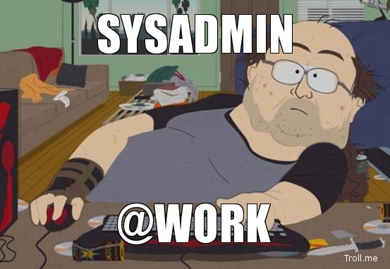
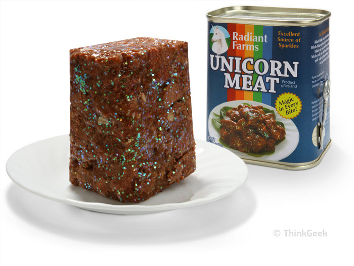

I am not a DevOp
what even is?

The Twelve-Factor App
A methodology for building modern web apps that:
- Use declarative formats for setup automation
- Have a clean contract with the underlying operating system
- Are suitable for deployment on modern cloud platforms
- Minimize divergence between development and production
- And can scale up without significant changes
The Twelve-Factor App

http://www.thinkgeek.com/product/e5a7/?srp=2
Your App
A decade old application that sort of still runs.
- Runs on servers that are lovingly hand crafted.
- Is written in a outdated language with poor dependency resolution.
- Runs under a web server like Apache or Tomcat.
- Looks different in Development and Production (and all the other steps).
Your App
http://tastyislandhawaii.com/2007/12/07/tulip-vs-treet-vs-spam-musubi-showdown/
Wordpress
The Twelve-Fakter App
- You want to modernize your application.
- You probably can't fix the app.
- No time to rewrite the app.
-
Fakter I. Codebase
One codebase tracked in revision control, many deploys
- Use Source control ( GIT! )
- Add deployment/config code to repo ( Chef Cookbook, Dockerfile)
- Add a Vagrantfile
- Add deploy scripts to deploy to different environments.
Fakter II. Dependencies
Explicitly declare and isolate dependencies
Docker
- Declaration: Dockerfile
- Isolation: `docker run`
Chef
- Declaration: Application Cookbook
- Isolation: Language Depdendent ( omnibus? )
Fakter III. Configuration
Store config in the environment
Docker
- `docker run -e TEXT=bacon myapp`
- Confd - {{ getv "/text" }}
Chef
- Cookbook Attributes ( roles, environments )
- Environment Cookbook
Fakter IV. Backing Services
Treat backing services as attached resources
- Make no distinction between local and third party services.
- Fairly simple to manage for databases etc.
- disk persistence is the hard one.
- remote storage: netapp, fuse-s3fs
- clustered FS: drdb, gluster
- Ghetto: Rsync
Fakter V. Build, release, run
Strictly separate build and run stages
Docker
- Build: `docker build -t myapp:1.3.2 .`
- Release: ...
- Run: `docker run -d -e TEXT=bacon myapp:1.3.2`
Chef
- Build: `berks install && berks upload`
- Release: `berks apply production`
- Run: `chef-client -E production`
Fakter VI. Processes
Execute the app as one or more stateless processes
- Applications should be treated as stateless processes.
- All data that needs to be persisted should be done via backing services.
- example: `session` data stored in redis or memcache.
Fakter VII. Port binding
Export services via port binding
Relying on an external service (ex. nginx for php) is a violation of 12factor. Use a language specific webserver library like `jetty` for java if possible.
Docker: This is basically solved by default via port binding in docker run command ( docker run -p 8080:8080 )
Chef: Harder to solve... Omnibus, live with violation.
Fakter VIII. Concurrency
Scale out via the process model
- Your application should not daemonize or write pid files.
- if it does, you may be able to script around it.
- Apps like nginx and apache can be run in foreground.
- Utilize tools like upstart or supervisord to handle process management.
Fakter IX. Disposability
Maximize robustness with fast startup and graceful shutdown
- Otimize to minimize startup ( Docker helps with this! )
- Graceful shutdown ( Finish current reqs or give back to a queue )
- Sudden Death ( minimal impact on crash. Smart LB can help? )
X. Dev/prod parity
Keep development, staging, and production as similar as possible
You've already done most of the work to achieve this:
- Use Vagrant to deploy your app and backing services in dev environment using appropriate provisioners.
- Docker/Chef help reduce complexity and time to go from dev to prod.
- by deploying all envs with same tooling, every dev rebuilt is a test of prod deploy tooling.
- Actions to deploy to prod is very similar to deploy to dev.
XI. Logs
Treat logs as event streams
- Never write to a log file always to stdout ( /dev/stdout /dev/stderr are your friends)
- If you have to write to a log file, you're violating several rules and will have to try to
script around it (or use a remote file backing service) so that long running containers do not run out of disk space.
- By writing to stdout, docker log subsystem sees the logs, and then tooling like ``logspout` can utilize to forward stream to central location.
XII. Admin processes
Run admin/management tasks as one-off processes
Docker
- docker run -t -e TEXT=bacon myapp:1.3.2 rake db:migrate or
- docker exec -t vibrating_descartes rake db:migrate
Chef
- Perform admin actions in own recipes `chef-client app::upgrade_db -r --once`
THE END
BY Paul Czarkowski / @pczarkowski